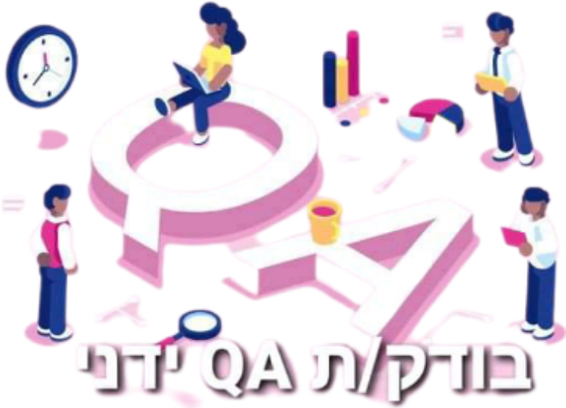

Doron Shalom
Welcome To My Website Artificial intelligence extends a computer’s normal input and output programming How are accountants using AI? Many traditional bookkeeping tasks, the ones that everyone loves so much (not), Big firms have won clients simply because small firms lack the resources

(calculator)
So, what is AI?
(more than just loading Facebook and YouTube).
It allows computers to make predictions and adapt
how they respond in certain situations -- just like us,
but hopefully not enough to take over the planet.
In professions that require rote tasks such as accounting and law,
AI is replacing human eyes for the better.
are already being performed by AI.
handles much of the work of initiating payments and matching purchase orders.
Although transaction approval should be largely left to humans.
to offer necessary services.
While small firms have their entire staff working on the present,
big firms are able to set aside accountants to work on the future.
This has given big firms the upper hand in the early adoption of AI.
Home|About|Links
About Me
Doron Shalom
PHONE : 054-21335121 it's time to change careers. I was looking for profession that suited me- I found that the QA role suits me in many ways: I have the abbility to pay attention to details and examine the object in several aspects
Education
Graduated professional and practical QA course in "The Automation College" (www.automation.co.il)
 Working with the next OS Platform: windows.
Working with the next OS Platform: windows.
 Working with variety of testing tools:Dev Tool, TestRail
BS (Bachelor of Science) ACCOUNTING
TOURO COLLEGE IN ISRAEL
Working with variety of testing tools:Dev Tool, TestRail
BS (Bachelor of Science) ACCOUNTING
TOURO COLLEGE IN ISRAEL
https://tci.touro.edu//
Technical Skills
I am Looking for a junior position / entry-level QA positions.
I am very Proactive and motivate to succeed in my first QA job!

Home| About|Links
LINKS

STR אלירן אקווריומים
Harnessing The Power Of Artificial Intelligence In Accounting
Types Of Software Testing